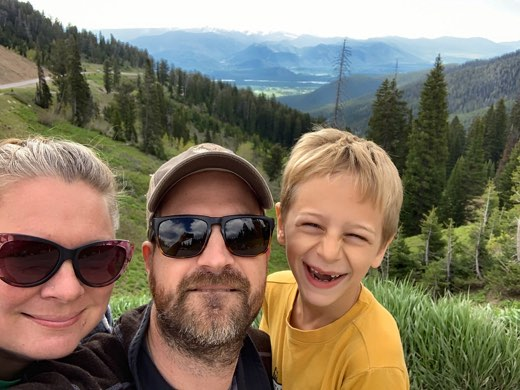
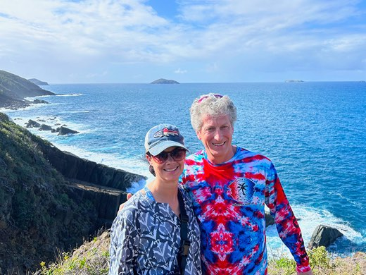
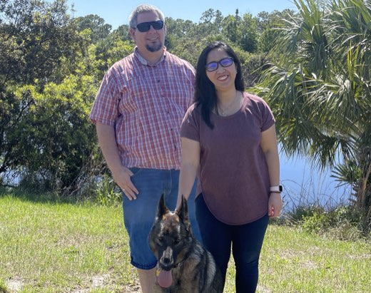
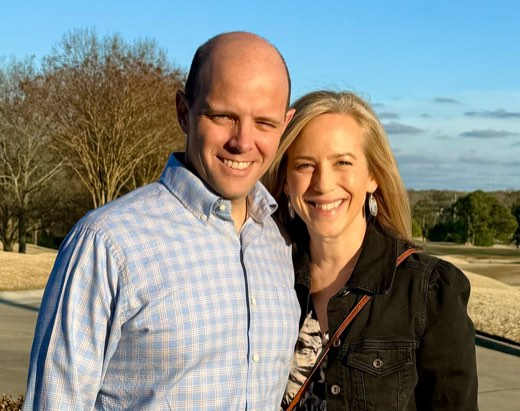

Launching a
stunning siteEasier than imagined
That’s what we often hear after a website launches because of a painful process before working with us. We make it so simple we can’t imagine why. Bringing your vision to life in a way that honors your brand is what drives us. We believe every business deserves a beautiful website that results in more sales and profit. Getting and managing a site should be easy.
Our
approach
Our secret starts with how we invest time to understand your business and goals. Armed with a strategy, we create a detailed plan. Once you see the path forward, we build a project schedule to keep everything on track. Then, we do the heavy lifting from design to development, leaving you more time to spend on what you’re most passionate about in your workday.
Meet our team

Austin Crane
For more than two decades, Austin immersed himself in the art of curating effective websites. He's an Atlanta native who graduated from Georgia State University with a degree in graphic design. Uniting his design background, extensive development experience, and passion for helping businesses grow, Austin creates stunning, user-friendly websites.
Before joining our team, Austin was pivotal on the marketing team at the US National Whitewater Center in Charlotte. He designed and implemented all digital marketing, including website design and development, crafted strategy and execution for social media and digital marketing, and ensured brand consistency and messaging. His work was part of the early efforts that led to the Whitewater Center's growth and success.
Austin's lifelong passion for the outdoors, particularly whitewater kayaking, initially led him to the Whitewater Center. He was a US National Team member for whitewater slalom and a four-time US National Champion and Pan Am gold medalist. Recently, Austin kayaked the entire length of the Grand Canyon on a two-week expedition - for the third time. With a deep love for Charlotte, Austin and his family enjoy living near Bellaworks' NoDa location.

Cathy Bradley
Cathy instills her creativity, organization, and steady hand into every project she leads. As our team's project manager, clients often share their appreciation for her can-do spirit and patience. Serving as a crucial link between a client and the team's designers and developers is where Cathy excels. She works to understand a client's needs, educates them through the process, and ensures the result is nothing short of remarkable.
As a North Carolina State University graduate, Cathy holds a degree in architecture. She brings valuable experience from her previous role as an architect and project manager at Gantt Huberman Architects in Charlotte.
Deeply committed to initiatives that aim to make Charlotte a better city for all, she actively volunteers through her church, children's schools, and other non-profits like Heart Math Tutoring. When she’s not guiding projects to success, you will find Cathy running, painting, at live music or sporting events, or spending time with her family and two dogs.

Lisa DeBona
Coding is Lisa’s passion. With over a decade of experience in website development, she is our go-to expert for building, fixing, and updating websites. Lisa can troubleshoot and resolve even the most complex website issues and curate a site from start to finish. Specializing in UI and UX development, she ensures sites are easy to navigate and user-friendly. Combining her graphic design artistry with her development expertise, Lisa consistently creates stunning websites that leave clients in awe.
Before joining the Bellaworks team over four years ago, she worked as a software developer in the Middle East, developing a CRM and HR portal. When Lisa isn't immersed in coding at her computer, you can find her in the kitchen baking, engaging in DIY projects in her garage, or playing with her German shepherd dog, Stella.

Jenny Hitt
When potential clients contact us, Jenny is often the first person they talk to. She excels at understanding a client's business and goals and finding ways to help them thrive, often through messaging, design, and user experience.
Jenny graduated from the University of Tennessee with a BA in American Studies. Having joined the team over six years ago, she brings experience from a 15-year career working in nonprofit management for universities and private secondary schools. As a former fundraising professional, she understands the importance of connecting with key audiences, explaining your unique value, and showing your ability to meet a need or solve a problem.
When she’s not working on Bellaworks projects, you might find her on an adventure somewhere - ziplining through a rainforest, hiking in the NC mountains, snorkeling clear blue waters, or on a movie set with her son, an actor. Or, you could just find her relaxing on the patio with family, friends, and rescue dog Willow.